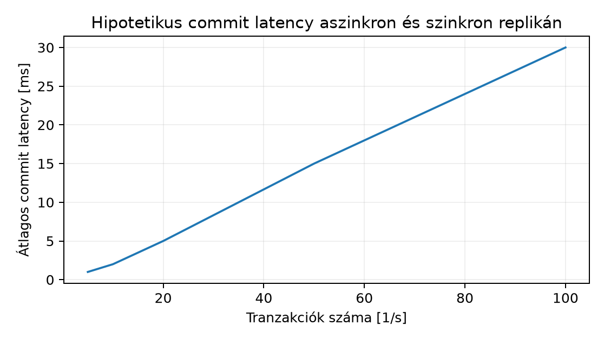

Az állapotmentes (stateless) szolgáltatás újraindításakor csak a processznek kell elindulnia. Egy adatbázist (database, DB) tartalmazó szolgáltatásnál a tartós állapotot a hibás lemez, a hibás host vagy a rosszul sikerült sémaváltozás után is garantálni kell. A replikáció (replication) és a helyreállítási terv (recovery plan) nem backend-részlet, hanem a szolgáltatás rendelkezésre állási és adatvesztési szerződésének alapja. Ez az alfejezet a primary/replica modellt, a WAL-archiválást, a failovert, a PITR-t és ezek RPO/RTO hatásait mutatja be PostgreSQL fogalmi példán, de nem állít aktuális verziókövetést. A parancsok izolált labVM-eken futnak; éles környezethez a support szintaxist ellenőrizni kell.
Definíció (primary/replica és lag): A primary (más néven master) fogad írási tranzakciókat, a replica (standby) másolja azokat, és olvasási lekérdezéseket szolgálhat ki. A PostgreSQL a módosításokat write-ahead logba (WAL) írja, majd a replica folyamatosan streameli ezt a logfolyamot, és visszajátssza. A replication lag az az idő, amennyivel a replica lemarad a primary mögött; mérhető bájtban (el nem küldött WAL), tranzakciószámban (LSN) vagy időben. Ugyanezt a logfolyamot lehet archiválni is, így a régebbi állapotok helyreállíthatók.
A synchonous (szinkron) és asynchronous (aszinkron) commit döntése közvetlen RPO-tradeoff. Szinkron módban a primary csak akkor jelez sikeres COMMIT-ot, ha a kijelölt replica megerősítette a WAL tartós írását. Ekkor RPO közel nulla, de a commit latency megnő, és ha a szinkron replica elérhetetlen, az írások blokkolódnak vagy hibára váltanak. Aszinkron módban azonnali commit, de a lag alatti adatvesztés lehetséges. A kettő közötti megoldás a quorum commit: több async replika közül legalább megerősítés szükséges, így az RPO a leggyorsabb quorum tag kieséséhez igazodik, nem a primary egyetlen lemezéhez.
A failover (átállás) során a replica primaryvá válik, a régi primert le kell állítani vagy el kell szigetelni. A fencing (izolálás) kritikus: ha a régi primary tovább fut, a kliens két írási pontot láthat, és split brain (kettős főnök) alakul ki, amely adatdivergenciához vezet. A fencing megvalósítható storage szinten (a régi primary lemezhozzáférésének elvesztése), hálózati szinten (a régi primary elérése letiltva), vagy cluster manageren keresztül (pl. node leválasztás). A failover után az alkalmazás kapcsolatának is át kell állnia: a client state nem követi automatikusan a DB state-et.
A backup (mentés) lehet logical backup (pl.
pg_dump), amely SQL/dump formátumú, táblánként
visszaállítható, de nagy adatbázisnál lassú. A physical backup
a DB fájlrendszer konzisztens másolata (pl. pg_basebackup),
amelyet WAL-archívummal kombinálva pont az időre visszaállítás
(point-in-time recovery, PITR) érhető el. A PITR feltétele: a base
backup készítésének időpontja, a lezárt WAL-szegmensek tartós archívumba
másolása, és a kívánt visszaállítási pont (például
recovery_target_time). A PITR után a rendszer nem
feltétlenül tartalmazza a későbbi tranzakciókat; ezért a targetet és a
kizárási politikát expliciten kell rögzíteni.
A séma migráció (schema migration) replikált környezetben akkor
biztonságos, ha a változtatás két fázisban bővíthető: először a
kompatibilis bővítést (add nullable column, új tábla, új index) vezetjük
be, az összes régi verzió tovább fut, majd egy későbbi deploy során
távolítjuk el a nem használt régi sémaelemet. A NOT NULL
vagy típusváltás közvetlenül blokkolhatja a replikációt, ha a replica
régi sémája nem tudja visszajátszani a WAL-t. Az index-újraépítés
CONCURRENTLY elkerüli a write lockot, de replikált
környezetben a replica saját indexét is karban kell tartani.
Labtopológia:
| Host | IP | Role |
|---|---|---|
| lab-pg-primary | 10.13.0.10 | primary |
| lab-pg-replica | 10.13.0.11 | standby |
| lab-backup | 10.13.0.20 | WAL archívum |
Minden parancs postgres OS felhasználóval vagy
sudo -u postgres módon fut. A labhost nevek explicit; a
parancsok nem futtathatók éles környezetben verzióellenőrzés nélkül.
1. Primary konfiguráció
(10.13.0.10):
sudo -u postgres psql -c "ALTER SYSTEM SET wal_level = replica;"
sudo -u postgres psql -c "ALTER SYSTEM SET max_wal_senders = 5;"
sudo -u postgres psql -c "ALTER SYSTEM SET synchronous_commit = on;"
sudo -u postgres psql -c "ALTER SYSTEM SET synchronous_standby_names = 'lab-replica';"
sudo systemctl restart postgresqlA synchronous_standby_names a replica alkalmazásnevét
azonosítja, amit a replica primary_conninfo-ban állítunk
be. A synchronous_commit = on minden tranzakcióra szinkron
megerősítést vár. Ez garantálja, hogy a committed adat a szinkron
rep
likán is megvan; az RPO committed adatra nulla, ha a primary és a szinkron replica nem egyszerre esik ki.
2. Replica konfiguráció
(10.13.0.11):
Először base backup streamelése a primaryból:
sudo -u postgres pg_basebackup -h 10.13.0.10 -D /var/lib/postgresql/16/main -R -X stream -PA -R kiírja a megfelelő primary_conninfo és
standby_mode/standby.signal beállítást. A replica
recovery.conf-fájlban (verziófüggő hely) ez
szerepelhet:
primary_conninfo = 'host=10.13.0.10 port=5432 user=rep password=labsecret application_name=lab-replica'
recovery_target_timeline = 'latest'Ellenőrzés primary oldalon:
sudo -u postgres psql -c "SELECT application_name, state, sent_lsn, write_lsn, replay_lsn, replay_lag FROM pg_stat_replication;"Várt kimenet: egy sor, state=streaming,
replay_lag közel nulla (pl. 00:00:00). Ha a
lag nő, az aszinkron módra utal vagy hálózati/tároló szűkületre.
3. Szinkron commit RPO tradeoff demonstráció:
Vizsgáljuk meg a commit latencyt szinkron és aszinkron módban egy
hipotetikus terhelésnél. A synchronous_commit értékét
változtathatjuk local-ra (aszinkron az archive szempontból,
de replica nélkül is commit). A mérés pgbench-et
használhat, de itt illusztratív számítást adunk.

| Tranzakció/s | Async latency | Sync latency (hipotetikus) |
|---|---|---|
| 5 | 1 ms | 1.5 ms |
| 10 | 2 ms | 3 ms |
| 20 | 5 ms | 8 ms |
| 50 | 15 ms | 25 ms |
| 100 | 30 ms | 50 ms |
Ez a modell azt mutatja: szinkron commit RPO-t csökkent, de az írási p99 latencyt és a függőségi láncot növeli.
4. Backup és PITR:
A WAL-archívumot archive_command-dal másoljuk egy tartós
helyre. Példa (a %p a lezárt WAL fájl, %f a
fájlnév):
sudo -u postgres psql -c "ALTER SYSTEM SET archive_mode = on;"
sudo -u postgres psql -c "ALTER SYSTEM SET archive_command = 'test ! -f /var/lib/postgresql/wal_archive/%f && cp %p /var/lib/postgresql/wal_archive/%f';"
sudo systemctl restart postgresqlBase backup készítése:
sudo -u postgres pg_basebackup -h 10.13.0.10 -D /var/lib/postgresql/backup_base -F tar -z -PA PITR-t teszteljük egy külön labhoston lab-recovery
(10.13.0.12), hogy a termelő primaryt ne érintsük. Az állítsunk be egy
recovery_target_time értéket:
restore_command = 'cp /var/lib/postgresql/wal_archive/%f %p'
recovery_target_time = '2025-03-15 14:30:00'
recovery_target_action = 'pause'A pause megállítja a visszajátszást a megadott
időpontnál, így ellenőrizhető az adat. Várt kimenet: a DB elindul, a
psql a pause állapotot mutatja, és csak a
megadott időpontig tartalmaz adatokat. Ez bizonyítja, hogy a PITR
működik, de a rendszer nem érhető el írható primaryként.
5. Failover és fencing:
Tegyük fel, hogy a primary 10.13.0.10 leáll. A replica
promóciója:
sudo -u postgres /usr/lib/postgresql/16/bin/pg_ctl promote -D /var/lib/postgresql/16/mainA promóció után a replica primaryvá válik. A régi primary fencingje nélkül split brain lehetséges. Laborban a régi primary hálózati izolálása:
ssh lab-pg-primary sudo ip link set eth0 downÉlesben ezt a cluster manager (pl. Patroni, repmgr) hajtja végre, de a LabVM-ben a cél a paradigmák gyakorlása. Ellenőrzés: a régi primary IP nem válaszol, az új primary írható, a replika lag nulla.
Hiba 1: a replica nem streamel. Tünet: a
pg_stat_replication üres, vagy a pg_basebackup
után a replica nem indul el. Hipotézis: a primary_conninfo
hibás jelszót vagy application_name-et tartalmaz; hálózati
tűzfal blokkolja a 5432-t. Adatgyűjtés:
journalctl -u postgresql a replica hoston;
ss -tlnp | grep 5432. Egy változtatás: ellenőrizni a
pg_hba.conf-ban a replikációs user hozzáférést, és
tesztelni
psql "user=rep host=10.13.0.10 dbname=replication".
Verification: a pg_stat_replication sor megjelenik,
state=streaming.
Hiba 2: commit timeout szinkron módban. Tünet: írási
tranzakciók synchronous_standby_name hiányában hosszú ideig
blokkolnak. Hipotézis: a szinkron replica kiesett, ezért minden commit
vár. Adatgyűjtés:
watch -n 1 'psql -c "SELECT pid,state,wait_event_type,wait_event FROM pg_stat_activity;"'
az írási kapcsolatnál. Egy változtatás:
ALTER SYSTEM SET synchronous_standby_names = ''; és
SELECT pg_stat_reset(); majd a tranzakció lefut.
Verification: commit latency visszaáll; adatvesztési RPO-tudat
növekszik. Megjegyzés: productionben a synchronous_commit
helyett a remote_apply is lehet, az alkalmazás állapotával
összhangban.
Hiba 3: split brain failover után. Tünet: két
primary pg_is_in_recovery() = false. Hipotézis: a régi
primary visszatért és továbbra is ír. Adatgyűjtés:
SELECT pg_current_wal_lsn() mindkét node-on; a LSN-ek
eltérnek. Egy változtatás: a régi primary azonnali leállítása, hálózati
fencing. Verification: csak az új primary érhető el, a régi primary a
régi LSN-en áll.
Hiba 4: PITR cél időpontja túl késői. Tünet: a
visszaállítás nem éri el a kívánt időt, vagy hibával leáll. Hipotézis: a
WAL-szegmens nem lett archiválva a meghibásodás pillanatában.
Adatgyűjtés: ls -l /var/lib/postgresql/wal_archive alapján
a legutóbbi fájl időbélyege. Egy változtatás: korábbi
recovery_target_time, vagy recovery_target_xid
az ismert jó tranzakció azonosítóval. Verification: a recovery sikeresen
megáll pause állapotban, a hibás tranzakció nincs
jelen.
1. (Magyarázó) RPO-számítás szinkron és aszinkron
replikánál.
Egy adatbázis írási terhelése 50 tranzakció/s. Aszinkron replikánál a
lag átlagosan 2 másodperc, szinkron quorum commitnál a megerősítést 1
másodperc alatt kapod meg, de a replica kiesésekor 200 ms commit timeout
van. Számítsd ki az RPO-t committed tranzakciókra (a) aszinkron, (b)
szinkron, (c) szinkron + replica kiesés esetén. Melyik komponens növeli
az availabilityt?
2. (Adminisztrációs) Primary–replica beállítása WAL
streaminggel.
A labhostok: lab-pg-primary és lab-pg-replica.
Készítsd el a primary beállításokat (wal_level,
max_wal_senders, synchronous_standby_names),
majd a replicán futtasd a pg_basebackup-ot -R
kapcsolóval. Ellenőrizd a pg_stat_replication-et. Mi a
desired state? Írd le a rollback lépéseket, ha a replica nem indul.
3. (Diagnosztikai/failure recovery) Failover és PITR
gyakorlat.
A primary lab-pg-primary leállt; a replica
lab-pg-replica még streaming állapotban van. Promotáld a
replicát primaryvá, majd végezz PITR-t egy korábbi időpontra a
lab-recovery hoston a base backup és a WAL-archívum
felhasználásával. Ellenőrizd, hogy a
recovery_target_action = 'pause' megállította-e a
processzt. Dokumentáld a client state-et: az alkalmazás kapcsolati
stringjét miért kell megváltoztatni?
1. RPO-számítás
Az RPO committed tranzakciókra az elveszhető committed adat kora, amely
aszinkron esetben a maximális lag idővel egyenlő: (a) RPO = 2 s.
Szinkron quorum commitnál a committed adat legalább a quorum tagban
tartós, tehát a primary és a quorum replica együttes kiesésekor az RPO
elméletileg nulla, de a gyakorlatban a quorum member meghibásodhat: ha a
szinkron replica éppen elérhetetlen, az írási tranzakció blokkolódik,
mert synchronous_standby_names alapján nincs megerősítés.
Ekkor a rendszer nem commitol, így a committed adat RPO-ja 0, de a
rendelkezésre állás lecsökken. (b) RPO = 0 (vagy a quorum member
tartóssági intervallum). (c) Ha a replica kiesik és a commit timeout 200
ms, az írások blokkolnak, de nem vesznek el committed adat. Az
availability csökken, mert a write path függővé válik a replica
elérhetőségétől. A számítás idődimenzióban:
,
,
de a commit latency nő, és a quorum member kiesésekor a write
availability csökken. Az acceptable RPO és availability tradeoffot az
SLO határozza meg.
2. Replica beállítása
Desired state: a pg_stat_replication egy sor
state=streaming, replay_lag < 100 ms.
Lépések: primary-n a fenti ALTER SYSTEM SET parancsok,
restart; a replica-n
pg_basebackup -h 10.13.0.10 -D /var/lib/postgresql/16/main -R -X stream -P.
A -R létrehozza a recovery állapotot. Elllenőrzés:
psql -c "SELECT * FROM pg_stat_replication;" a
primary-n. Rollback: ha a replica nem indul, a journalctl
megmutatja a csatlakozási hibát. A replica hoston a
primary_conninfo-ban a password labsecret
legyen, és a pg_hba.conf engedélyezze a rep user replikációt. A
primary-n a synchronous_standby_names neve egyezzen a
application_name-mel. Postcondition: a primary írásai
megjelennek a replica-n, a lag ~0.
3. Failover és PITR
Failover: a replica promotálása pg_ctl promote, közben a
régi primary leállítása vagy izolálása. Ellenőrzés:
psql -c "SELECT pg_is_in_recovery();" hamis az új
primary-n. PITR: a lab-recovery hoston
pg_basebackup-ból visszaállított base, a
recovery_target_time és restore_command
beállítás. A restore_command másolja a WAL-okat az
archívumból, a recovery_target_action pause
megállítja a folyamatot. Ellenőrzés: a psql kapcsolódik, és
a kívánt időpont utáni tranzakció hiányzik. A client state: az
alkalmazás connection string vagy a DNS a régi primary IP-t mutatja;
frissíteni kell a primary floating IP-t vagy a service discoveryt. A
postcondition: az új primary fogad írásokat, a PITR példa pause
állapotban van, és egyetlen split brain sincs.
A replikáció a WAL streamelésével biztosítja, hogy a committed adat legalább egy másodlagos node-on is meglegyen. A szinkron commit RPO-t nullára csökkent, de a write availabilityt és latencyt rontja; az aszinkron lag növeli az RPO-t. A failover előtt fencinggel meg kell akadályozni a split brain-t. A PITR a physical base backup és a WAL-archívum kombinációjával tetszőleges, a backup készítése utáni időpontra visszaállít, de az archívum sértetlenségét és a séma migráció kompatibilitását külön kell tesztelni. A recovery rehearsal nem csak a DB state-et, hanem a client connection és a séma verziót is ellenőrzi.
Továbbhasznált definíciók:
Kiindulópontként megadott források:
Ezeket a generálás során nem tekintem olvasottnak vagy aktuálisan
ellenőrzöttnek. A példában használt PostgreSQL paraméterek
(wal_level, synchronous_commit,
synchronous_standby_names, pg_basebackup,
recovery_target_time) stabil fogalmi elemek, de a pontos
szintaxis, a PostgreSQL főverzió (16-os példa) és a recovery fájl
elnevezése verziófüggő. A recovery.conf eltávolítása a
PostgreSQL 12-ben megtörtént, de a support release pontos konfigurációs
módját ellenőrizni kell. Az éles beállításhoz szükséges a hivatalos,
verzióra lebontott dokumentáció. A lab környezetben a WAL archívum
elérési útja (/var/lib/postgresql/wal_archive) és a
replikációs user (rep) csak példa; a jelszó
labsecret dummy adat. A cloud esetén a managed PostgreSQL
replication és PITR beállításai szolgáltatóspecifikusak; jelen alfejezet
nem terjed ki a managed service pontos API-jára. A tényleges
failover/fencing eszköz (Patroni, repmgr) verziója és konfigurációja
további ellenőrzést igényel.